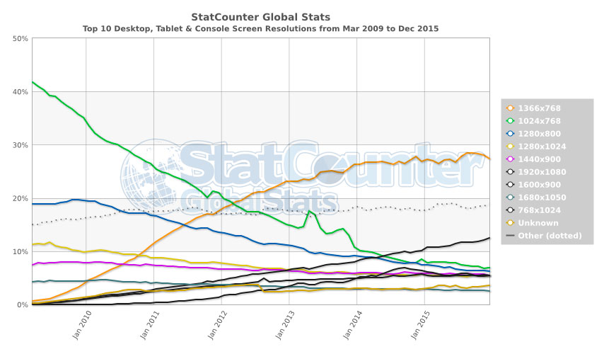

Las media queries son reglas que se introducen en una hoja de estilo CSS para definir propiedades específicas para distintos medios. Permitiendo diferentes comportamientos y logrando adaptabilidad sin tener que cambiar el contenido original.
Estas son la base para el diseño responsivo. Permitiendo asi que el diseño se adapte a diferentes dispositivos y tipos de pantalla
Las media queries se implementaron en 2012 como una solución para la creciente demanda de multiples tamaños de pantalla. Siendo implementadas con la versión CSS3, pasando a ser un estándar en la web. Estas tambien se implementaron como una forma de mejorar la accesibilidad, permitiendo auimentar las fuentes, mejorar el contraste, etc.
Se pueden definir